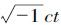
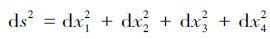

现在我们已有可能更为严谨地表述闵可夫斯基的观念，这个观念在第17节中只是含糊地谈到一下。按照狭义相对论，要优先用某些坐标系来描述四维空时连续区。我们把这些坐标系称为“伽利略坐标系”。对于这些坐标系，确定一个事件或者换言之确定四维连续区中一个点所用的四个坐标x,y,z,t ，在物理意义上具有简单的定义，这在本书第一部分已有所详述。从一个伽利略坐标系过渡到相对于这个坐标系作匀速运动的另一个伽利略坐标系时，洛伦兹变换方程是完全有效的。这些洛伦兹变换方程构成了从狭义相对论导出推论的基础，而这些方程的本身也只不过是表述了光的传播定律对于一切伽利略参考系的普适有效性而已。
闵可夫斯基发现洛伦兹变换满足下述简单条件。我们考虑两个相邻事件，这两个事件在四维连续区中的相对位置，是参照伽利略参考物体K 用空间坐标差dx ,dy ,dz 和时间差dt 来表示的。我们假定这两个事件参照另一个伽利略坐标系的差相应地为dx′ ，dy′ ,dz′ ,dt′ 。那么这些量总是满足条件 [1]
dx 2 +dy 2 +dz 2 -c 2 dt 2 =dx′ 2 +dy′ 2 +dz′ 2 -c 2 dt′ 2
洛伦兹变换的有效性就是由这个条件来确定。对此我们又可以表述如下：
属于四维空时连续区的两个相邻点的这个量
ds 2 =dx 2 +dy 2 +dz 2 -c 2 dt 2
对于一切选定的(伽利略)参考物体，皆具有相同的值。如果我们用x 1 ,x 2 ,x 3 ,x 4 代换x,y,z ,

，我们也得出这样的结果，即
与参考物体的选取无关。我们把量ds称为两个事件或两个四维点之间的“距离”。
因此，如果我们不选取实量t 而选取虚变量 作为时间变量，我们就可以——按照狭义相对论——把空时连续区当作一个“欧几里得”四维连续区，这个结果可以由前节的论述推出。
[1] 见附录Ⅰ(1)和(2)。在附录中就坐标本身导出的关系式，对于坐标差也有效，因而对于坐标微分(无穷小的差)也是有效的。